A immersion-based cultural interaction device for Mount Foshan’s Lantern Lake Kaiser. With the Running South Dragon Boat as the main narrative line, the South China Sea wind has been recast as a playable cultural experience, and the touch screen is linked to the big screen.
With the Running South Dragon Boat competition as the main narrative line, the breaking of bridges, temples, kilns, streets, etc. in the South China Sea has been recast into three funable cultural experiences — the dragon canal puzzle, the hymn, the wind — and the wind. The viewers read the memory and the science of a water village at the pace of the game in front of the touch screen.
Main vision, gameplay interface and national trend art.
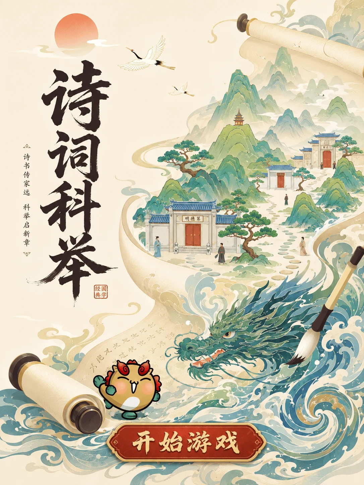
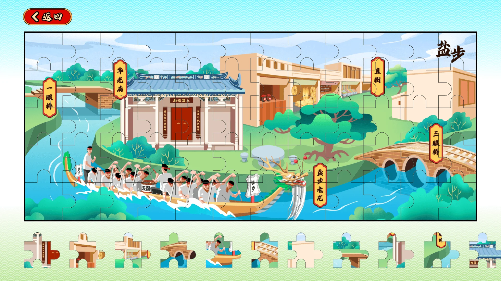
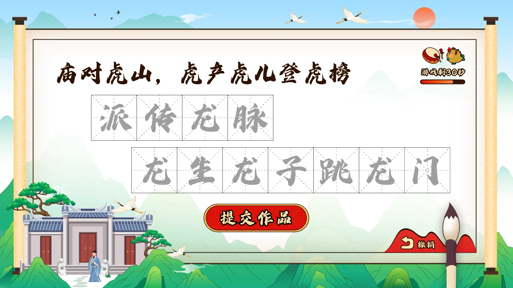
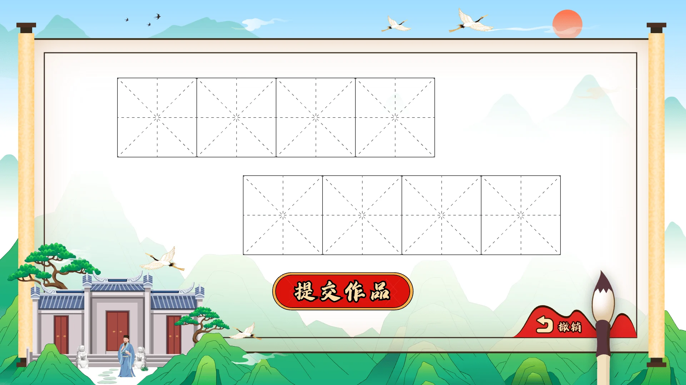
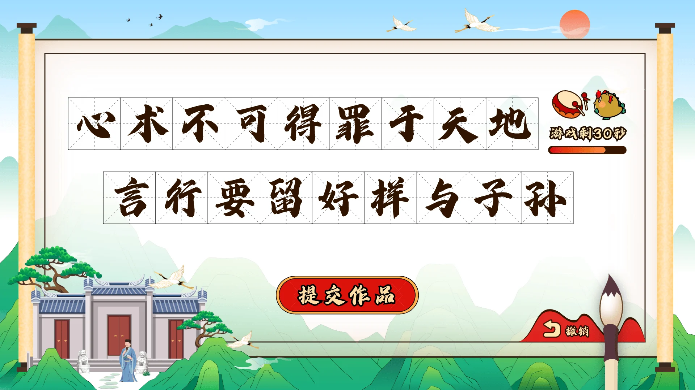
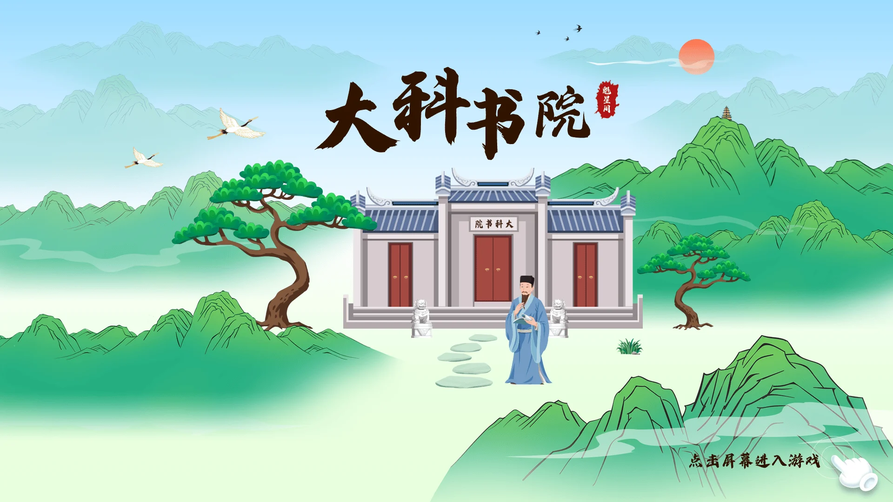
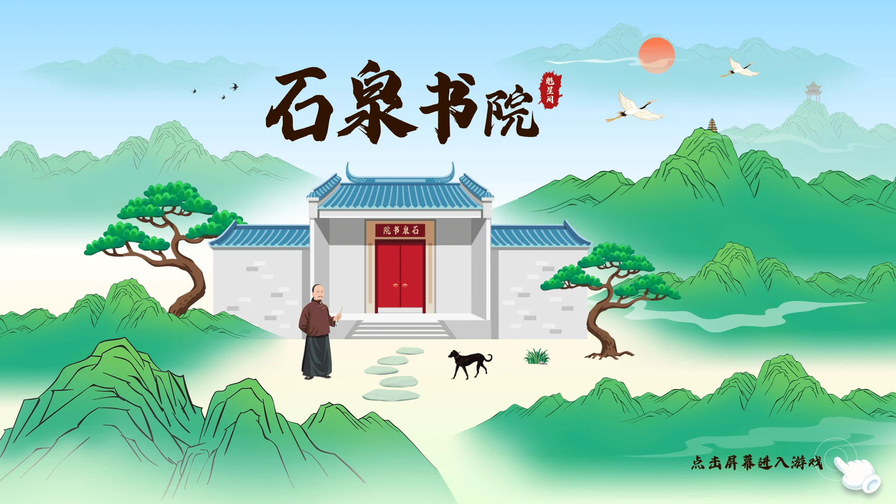
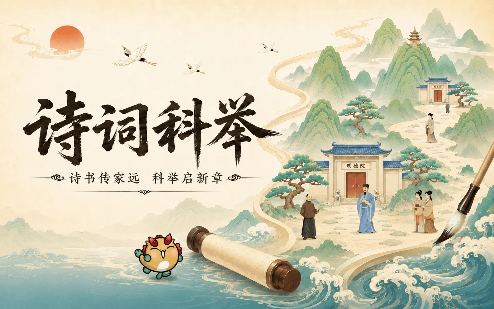
Reconstructing the removal of the South China Sea from the ground wind into a playable cultural scene.
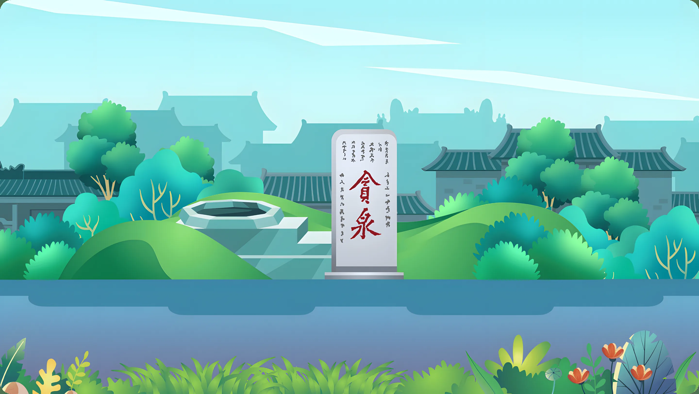
Yihong Qingquan, see the clean and original heart.
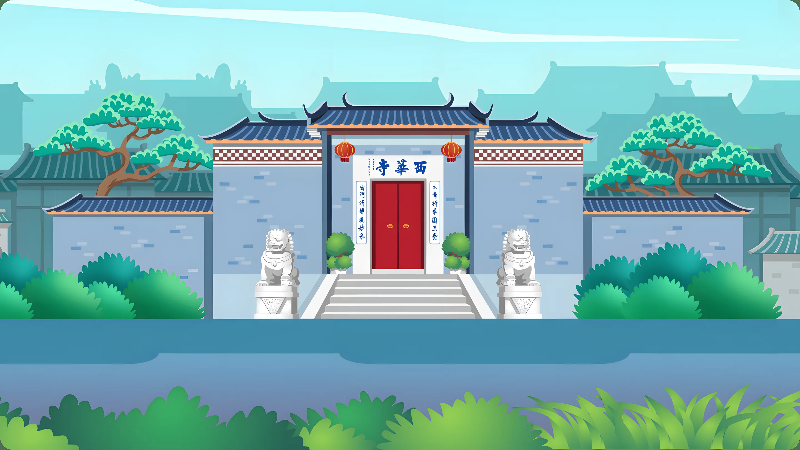
Ancient temple bells, Zen paintings.
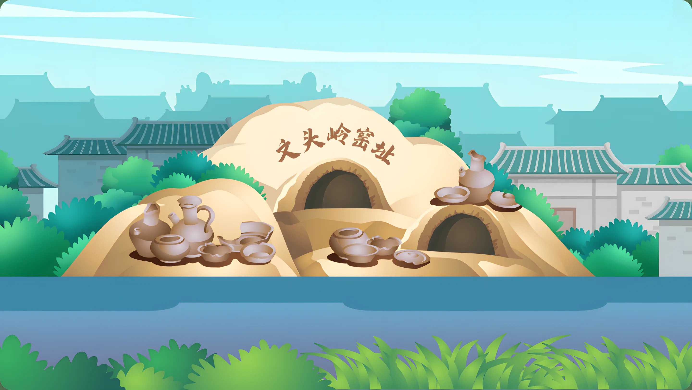
In the millennium kiln fire, the pottery rhyme still exists.
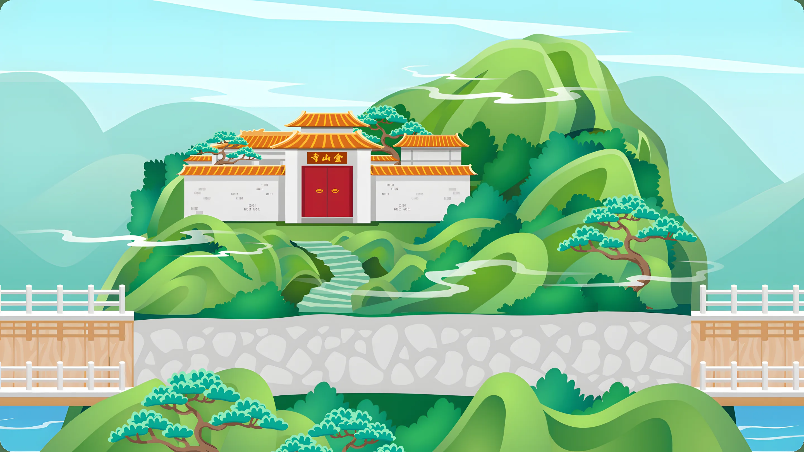
Mid-levels pavilion, clouds deep hidden Zen.
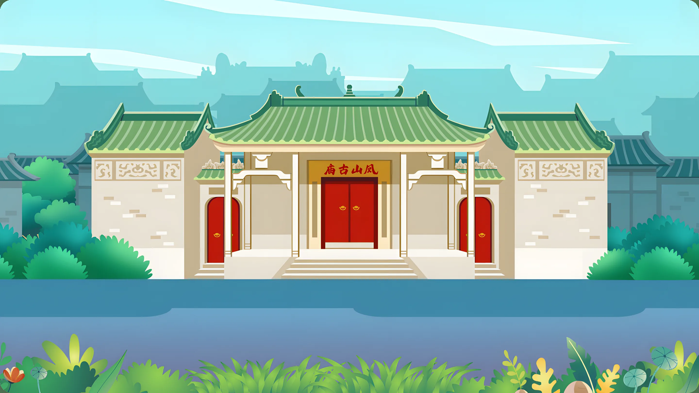
Blessed by Fengshan, Xiang Huo was a thousand years old.
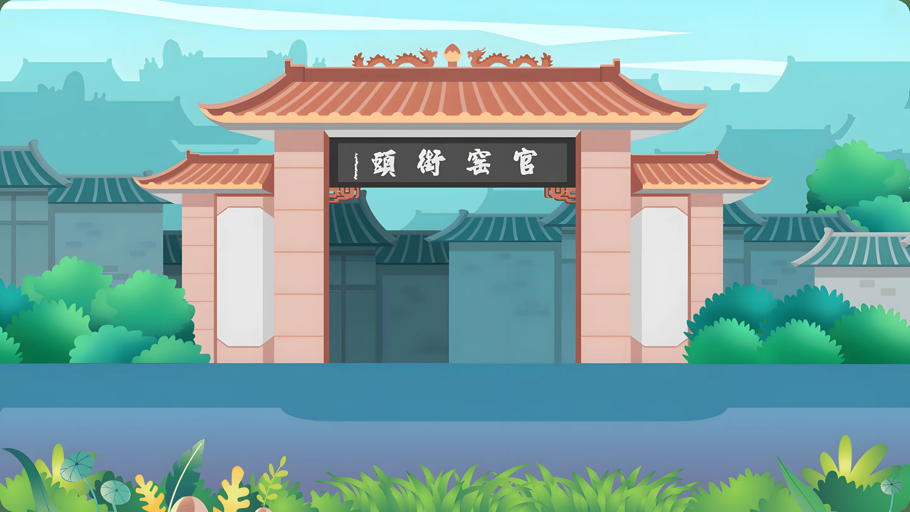
Together, north and south, business travel will last for millennia.